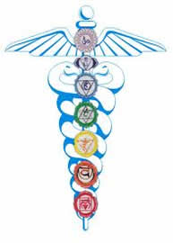
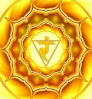

CHAKRAS
|  |
Centros de energia
Todo nosso corpo contém energia, nesse contexto existem 7 pontos específicos chamados de chakras que se destacam aos demais.
Chakras em sânscrito quer dizer rodas de energia. Cada chakra tem aparência e cor diferentes e vibra, ou gira, em sua velocidade própria, assim como emite energia – espiritual, mental, emocional, física – para o seu nível correspondente. Eles são canais dentro do corpo humano (nadis) por onde circula nossa energia vital (o prana) que nutre os órgãos e sistemas.
1° Chakra - Básico ou Raiz
Está localizado na base da espinha e é conhecido como base da força vital. No corpo físico, está associado à espinha vertebral, às supra-renais, aos rins e ao cólon. É uma energia vermelha e representa nosso instinto de sobrevivência – a forte capacidade física e a vitalidade. É utilizado para redirecionar as energias para o nosso corpo e também para captar energias cósmicas provenientes do nosso planeta, para revitalizar outros centros chácricos.
Símbolo: Lótus de 4 pétalas
2° Chakra - Umbilical ou Sexual – Chakra Esplênico
Também conhecido como chakra sacri, localiza-se cinco centímetros abaixo do umbigo. É a base de toda a intuição e da sensibilidade psíquica. É conhecido como centro de sensações - onde ficam estocadas as emoções em sua forma mais primitiva. Como se trata de um centro primariamente situado no nível das sensações, toda percepção extra-sensorial e psíquica emana dessa área. No nível físico, está associado aos órgãos sexuais, ao baço e à vesícula. Possui a cor laranja.
Símbolo: Lótus de 6 pétalas
3° Chakra – Plexo Solar
O terceiro centro está localizado acima do umbigo, na área do baço. Aqui, as emoções mais primitivas são elevadas a uma vibração mais refinada. Trata-se do centro de nossos sentimentos, vontade e autonomia. Essa área afeta a digestão e órgãos como o estômago, o pâncreas, as supra-renais, o fígado e a vesícula biliar. No nível físico, essa é a conexão com o cordão de prata, e nos possibilita as viagens astrais. O chakra do baço geralmente aparece na cor amarela.
Símbolo: Lótus de 10 pétalas
4° Chakra - Cardíaco
Localizado no centro do peito, entre as omoplatas, o chakra do coração é a base do amor incondicional. Aqui residem os mais elevados sentimentos de compaixão, confiança, generosidade, receptividade e tudo o que nos leva a cuidar de outra pessoa e a prestar auxílio a quem quer que seja. Daqui emanam também atributos associados à capacidade de entrar em estado de transe e de pressentir a presença de seres espirituais. Fisicamente, está ligado ao coração, á glândula timo e ao sistema circulatório. A cor desse chakra é verde.
Símbolo: Lótus de 12 pétalas
5° Chakra - Laríngeo
Quando esse centro é desenvolvido, é usado na clariaudição – pessoas dotadas da capacidade de escutar os espíritos. No que toca à mediunidade, o chakra da garganta, juntamente com o do baço e o do plexo solar, proporciona a ligação direta através da voz ao médium. Esse centro é a fonte de toda expressão criativa. No corpo físico, afeta diretamente a tiróide, o hipotálamo, a garganta e a boca. Concentrem sua meditação na cor azul para abrir esse centro.
Símbolo: Lótus de 16 pétalas
6° Chakra – Terceiro olho ou da terceira visão
Trata-se provavelmente do chakra mais conhecido do público. É de fato um centro importantíssimo, localizado no meio da testa. Quando desenvolvido a um nível que o habilite ao trabalho psíquico, é utilizado para a clarividência. Uma vez aberto, torna o médium capaz de enxergar as auras, além de imagens de todas as formas e de todas as cores, e os próprios seres espirituais. No corpo físico, está associado com os ouvidos, com a glândula pituitária, a pineal e com o nariz. A cor correspondente é o anil, também conhecido como índigo.
Símbolo: Lótus de 96 pétalas
7° Chakra - Coronário
O sétimo centro está localizado no topo da cabeça. Trata-se da entrada para as mais elevadas energias cósmicas. Quando desenvolvido, pode ser utilizado para influenciar os demais centros e para fornecer ao trabalho sensitivo as mais elevadas verdades do mundo espiritual. É o foco central da oração, proteção, misticismo e elevação espiritual. Para desenvolvê-lo, concentrem sua meditação num bonito tom de violeta - a cor que representa esse chakra. O chakra da coroa influencia o córtex cerebral e o sistema nervoso central.
Símbolo: Lótus de mil folhas
A seguir, videos para entender melhor sobre a função de cada um dos chakras.